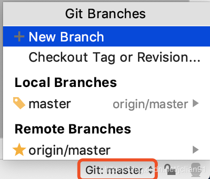
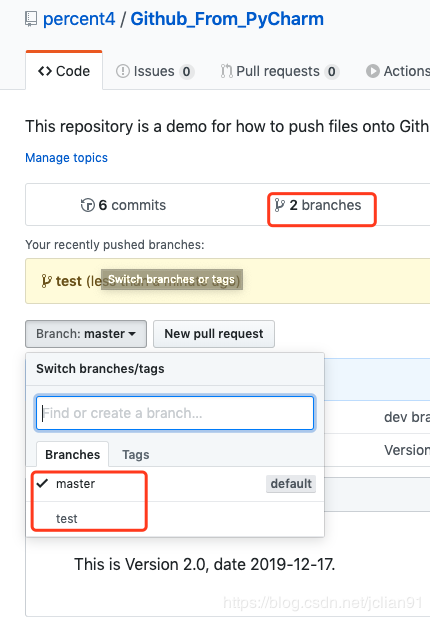
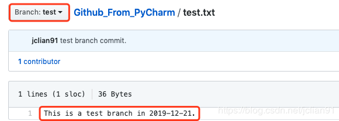
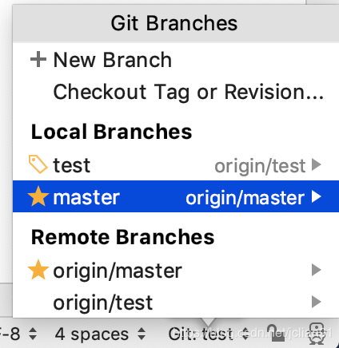
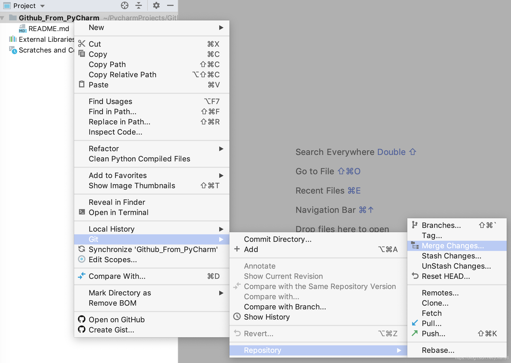
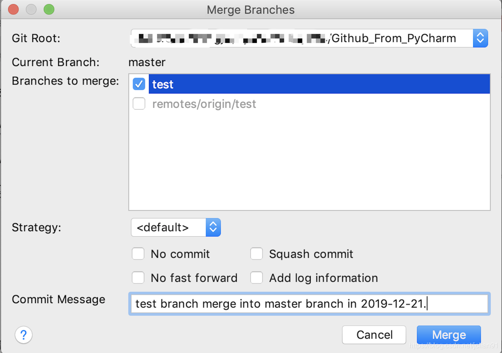
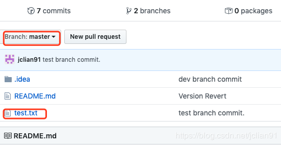

在文章利用PyCharm操作Github：仓库新建、更新，代码回滚中，我们已经学习到了如何利用PyCharm来操作Github，其中包括了一些常见的Github操作：仓库的新建、更新以及代码回滚。在本文中，我们将介绍Git的另一部分的常见操作：分支新建、切换、合并、删除，这些操作我们将借助PyCharm来实现，用Github作为Git的演示。
我们假定读者已经在PyCharm中设置好了Git以及Github账号，同时对Git的分支操作有初步的了解。我们以笔者的Github上的一个测试项目Github_From_PyCharm为例，该项目的访问网址为：https://github.com/percent4/Github_From_PyCharm，该项目现在仅有一个默认的master分支。
我们将该项目clone到本地。
用PyCharm打开clone至本地的Github_From_PyCharm项目，点击右下方的Event log下面的Git:master可以查到到该项目的分支信息，如下图：

可以发现，该项目在本地、远程Github上都只有一个默认的master分支。点击“+New Branch”可以创建新的分支，我们取名为“test”分支，创建好后会发现右下方的“Git:master”已显示为“Git:test”，说明项目在本地的分支已经切换至test分支，同时我们新建一个test.txt,里面内容为“This is a test branch in 2019-12-21.”
将该项目按照文章利用PyCharm操作Github：仓库新建、更新，代码回滚中的步骤提交至Github上，提交成功后Github上的界面如下：

查看test分支，我们可以看到新增了一个test.txt文件，里面内容如下：

这说明我们成功地创建了一个新分支：test，并提交成功。
PyCharm中的分支切换十分简单，我们再次点击右下角Event Log下的“Git test”,显示如下：

可以看到，现在改项目在本地、Github上都有两个分支：master和test，而现在是test分支。如果我们想切换至master分支，需要点击master分支的右侧文字“origin/master”，再选中“Checkout”即可，这时候右下方应该显示为“Git:master”，说明项目已经切换至master分支了。
如果我们还需要将test分支合并至master分支，也就是将test分支的修改内容合并至master分支。首先将项目切换至master分支，右击 --> Git --> Repository --> Merge Changes，如下图所示：

在弹出的弹框中，选择需要合并的分支为本地的test分支，并写好Commit Message，如下图：

点击“Merge”按钮后，该项目就已经合并成功。如果我们还想把合并后的master分支提交到Github上，这时候我们需要注意，右击选择Git后，选择“Add”再push到Github，注意，是选择“Add”，而不是“Commmit Directory”，不然PyCharm就会提示“no changes detected”。这时候我们再查看Github上master分支中的内容，截图如下：

可以看到，远程分支已经合并成功了，我们成功地将test分支中的修改内容合并到master分支了。
分支删除的操作也十分简单，和分支切换的操作很类似，我们点击右下角的“Git master”，点击需要删除的test本地分支，再选择“Delete”即可。
本次分享到此结束，感谢大家阅读~
注意：本人现已开通微信公众号： Python爬虫与算法（微信号为：easy_web_scrape）， 欢迎大家关注哦~~